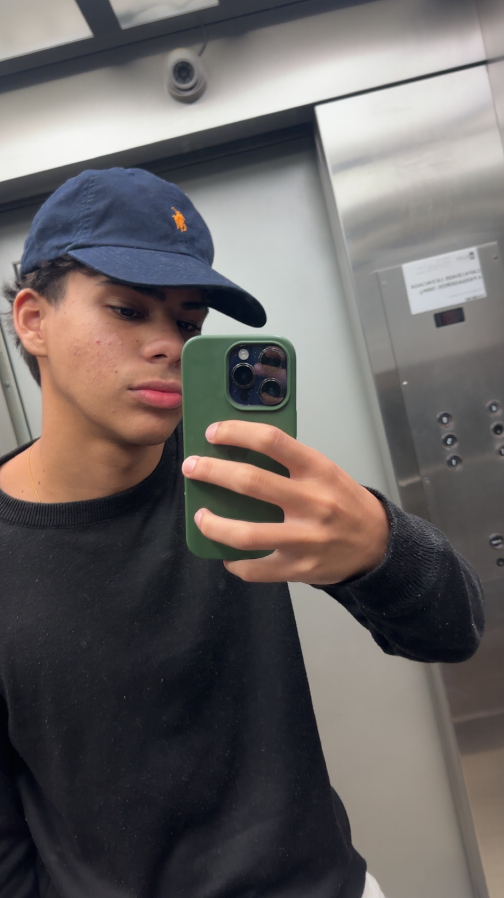

SobreOlá, eu sou o Bernardo
Tenho 16 anos e sou de Monte Mor - SP. Gosto muito de treinar na academia, jogar futvôlei e futsal, e criei este site como meu projeto pessoal na disciplina de Desenvolvimento de Websites, Programação Orientada a Objetos e Banco de Dados.
Um pouco sobre mim
Quando não estou dormindo, você provavelmente vai me encontrar na academia treinando ou jogando uma bola com os amigos. Gosto de disciplina e evolução constante — seja nos treinos, seja aprendendo a programar.
Objetivo deste projeto
Este site é o meu espaço pessoal para colocar em prática o que estou aprendendo em Desenvolvimento de Websites, Programação Orientada a Objetos e Banco de Dados.